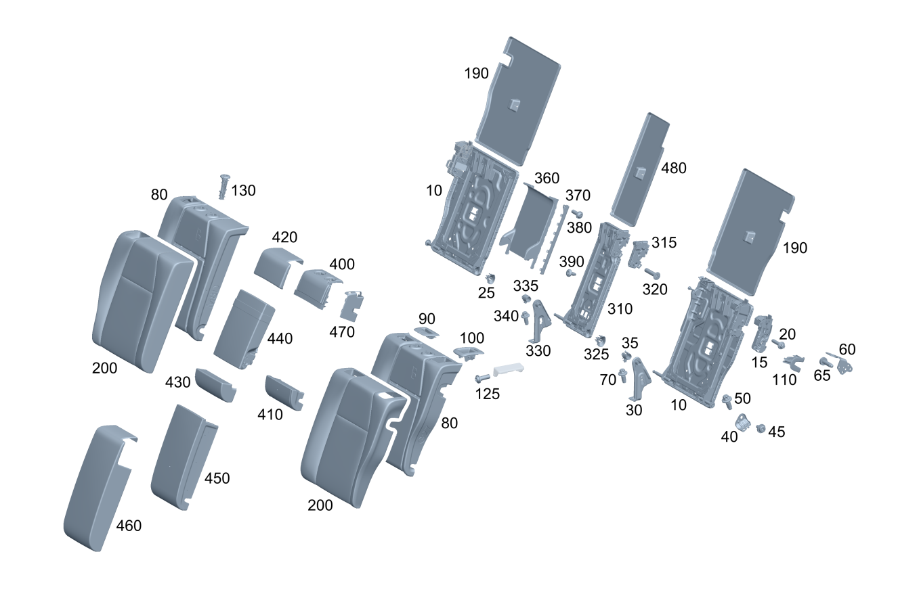

| № | Артикул | Название | Кол. | Примечание | Ограничение |
|---|---|---|---|---|---|
| 10 | A 247 920 21 00 | Рама спинки (BACKREST FRAME) | 1 | Слева | |
| 10 | A 247 920 21 00 | Рама спинки (BACKREST FRAME) | 1 | Слева | |
| 10 | A 247 920 22 00 | Рама спинки (BACKREST FRAME) | 1 | Справа | |
| 10 | A 247 920 22 00 | Рама спинки (BACKREST FRAME) | 1 | Справа | |
| 15 | A 177 920 53 00 | - Фиксатор спинки сиденья (LOCK FOR SEAT BACKREST) | 1 | Спинка слева | |
| 15 | A 177 920 54 00 | - Фиксатор спинки сиденья (LOCK FOR SEAT BACKREST) | 1 | Спинка справа | |
| 20 | A 000 990 18 26 | - Винт Torx External (HEXALOBULAR HEAD SCREW) | 2 | КРЕПЛЕНИЕ МЕХАНИЗМА БЛОКИРОВКИ (ЛЕВ.); M8X35 | |
| 20 | A 000 990 18 26 | - Винт Torx External (HEXALOBULAR HEAD SCREW) | 2 | КРЕПЛЕНИЕ МЕХАНИЗМА БЛОКИРОВКИ (ПРАВ.); M8X35 | |
| 25 | A 177 920 03 04 | - Поворотная опора (PIVOT BEARING) | 1 | РАМА СПИНКИ СПРАВА | -567 |
| 25 | A 177 920 03 04 | - Поворотная опора (PIVOT BEARING) | 1 | РАМА СПИНКИ СПРАВА | -567 |
| 30 | A 247 920 00 00 | Поворотная опора (PIVOT BEARING) | 1 | Изнутри, левое сиденье | |
| 35 | A 177 920 04 03 | - Поворотная опора (PIVOT BEARING) | 1 | Изнутри, левое сиденье | |
| 40 | A 247 920 25 00 | Поворотная опора (PIVOT BEARING) | 1 | Снаружи, левое сиденье | |
| 40 | A 247 920 26 00 | Поворотная опора (PIVOT BEARING) | 1 | Снаружи, правое сиденье | |
| 45 | A 002 984 28 29 | болт (SCREW) | 1 | Крепление поворотной опоры (внешн.) к раме спинки (левая сторона); M10X22.5 | |
| 45 | A 002 984 28 29 | болт (SCREW) | 1 | Крепление поворотной опоры (внешн.) к раме спинки (правая сторона); M10X22.5 | |
| 50 | N 910143 010011 | Винт с 6-гр. глвк (HEXALOBULAR SCREW) | 1 | КРЕПЛЕНИЕ ПОВОРОТНОЙ ОПОРЫ К ОСТОВУ КУЗОВА (ЛЕВ.); M10X20\-10.9 | |
| 50 | N 910143 010011 | Винт с 6-гр. глвк (HEXALOBULAR SCREW) | 1 | КРЕПЛЕНИЕ ПОВОРОТНОЙ ОПОРЫ К ОСТОВУ КУЗОВА (ПРАВ.); M10X20\-10.9 | |
| 60 | A 177 921 02 00 | Крепежная скоба (MOUNTING BRACKET) | 1 | Спинка слева | |
| 60 | A 177 921 01 00 | Крепежная скоба (MOUNTING BRACKET) | 1 | Спинка справа | |
| 65 | N 000000 001428 | Винт с 6-гр. глвк (HEXALOBULAR SCREW) | 2 | КРЕПЛЕНИЕ СКОБЫ (ЛЕВ.); M8X25\-8.8 | |
| 65 | N 000000 001428 | Винт с 6-гр. глвк (HEXALOBULAR SCREW) | 2 | КРЕПЛЕНИЕ СКОБЫ (ПРАВ.); M8X25\-8.8 | |
| 70 | N 910143 010011 | Винт с 6-гр. глвк (HEXALOBULAR SCREW) | 2 | Крепление поворотной опоры к остову кузова (центральн. лев.); M10X20\-10.9 | |
| 80 | A 247 920 29 06 | Накладка спинки сиденья (PADDING, RR SEAT BACKREST) | 1 | Слева | 7U1 |
| 80 | A 247 920 29 06 | Накладка спинки сиденья (PADDING, RR SEAT BACKREST) | 1 | Слева | 7U1 |
| 80 | A 247 920 31 06 | Накладка спинки сиденья (PADDING, RR SEAT BACKREST) | 1 | Слева | 7U2/7U4/555 |
| 80 | A 247 920 31 06 | Накладка спинки сиденья (PADDING, RR SEAT BACKREST) | 1 | Слева | 7U2/7U4/555 |
| 80 | A 247 920 01 03 | Накладка спинки сиденья | 1 | Слева | (7U2/7U4/555)+700 |
| 80 | A 247 920 01 03 | Накладка спинки сиденья | 1 | Слева | (7U2/7U4/555)+700 |
| 80 | A 247 920 30 06 | Накладка спинки сиденья (PADDING, RR SEAT BACKREST) | 1 | Справа | 7U1 |
| 80 | A 247 920 30 06 | Накладка спинки сиденья (PADDING, RR SEAT BACKREST) | 1 | Справа | 7U1 |
| 80 | A 247 920 32 06 | Накладка спинки сиденья (PADDING, RR SEAT BACKREST) | 1 | Справа | (7U2/7U4/555) |
| 80 | A 247 920 32 06 | Накладка спинки сиденья (PADDING, RR SEAT BACKREST) | 1 | Справа | (7U2/7U4/555) |
| 80 | A 247 920 02 03 | Накладка спинки сиденья | 1 | Справа | (7U2/7U4/555)+700 |
| 80 | A 247 920 02 03 | Накладка спинки сиденья | 1 | Справа | (7U2/7U4/555)+700 |
| 90 | A 177 923 03 00 | Облицовка рамы спинки (COVER, BACKREST FRAME) | 1 | Место выхода ремня безопасности слева | |
| 90 | A 247 923 26 00 | Облицовка рамы спинки (COVER, BACKREST FRAME) | 1 | ВЫХОД РЕМНЯ, СЛЕВА | 567 |
| 100 | A 177 923 00 00 | Накладка ручки | 1 | Ручка разблокировки слева | |
| 100 | A 177 923 00 00 | Накладка ручки | 1 | Ручка разблокировки справа | |
| 110 | A 177 923 06 00 | Облицовка рамы спинки | 1 | Разблокировка, слева | |
| 110 | A 177 923 06 00 | Облицовка рамы спинки | 1 | Разблокировка, справа | |
| 125 | A 001 984 56 29 | Болт с головкой торкс (HEXALOBULAR BOLT) | 1 | Крепление накладки слева; 4X12 | |
| 125 | A 001 984 56 29 | Болт с головкой торкс (HEXALOBULAR BOLT) | 1 | Крепление накладки справа; 4X12 | |
| 130 | A 177 970 64 00 | Направляющая подголовника (HEAD RESTRAINT GUIDE) | 1 | С разблокировкой посередине | |
| 130 | A 177 970 65 00 | Направляющая подголовника (HEAD RESTRAINT GUIDE) | 1 | Без разблокировки, посередине | |
| 130 | A 177 970 64 00 | Направляющая подголовника (HEAD RESTRAINT GUIDE) | 1 | С разблокировкой левого сиденья | |
| 130 | A 177 970 65 00 | Направляющая подголовника (HEAD RESTRAINT GUIDE) | 1 | Без разблокировки левого сиденья | |
| 130 | A 177 970 64 00 | Направляющая подголовника (HEAD RESTRAINT GUIDE) | 1 | С разблокировкой правого сиденья | |
| 130 | A 177 970 65 00 | Направляющая подголовника (HEAD RESTRAINT GUIDE) | 1 | Без разблокировки правого сиденья | |
| 190 | A 177 924 02 00 | Обивка спинки сиденья | 1 | Слева | |
| 190 | A 177 924 04 00 | Обивка спинки сиденья | 1 | Справа | |
| 200 | A 247 920 36 01 | Обивка спинки сиденья (OUTER COV., RR SEAT BACKR) | 1 | Слева | 7U1+300A |
| 200 | A 247 920 36 01 | Обивка спинки сиденья (OUTER COV., RR SEAT BACKR) | 1 | Слева | 7U1+300A |
| 200 | A 247 920 41 01 | Обивка спинки сиденья (OUTER COV., RR SEAT BACKR) | 1 | Слева | 7U2+100A |
| 200 | A 247 920 41 01 | Обивка спинки сиденья (OUTER COV., RR SEAT BACKR) | 1 | Слева | 7U2+100A |
| 200 | A 247 920 91 01 | Обивка спинки сиденья (OUTER COV., RR SEAT BACKR) | 1 | Слева | 7U2+200A |
| 200 | A 247 920 91 01 | Обивка спинки сиденья (OUTER COV., RR SEAT BACKR) | 1 | Слева | 7U2+200A |
| 200 | A 247 920 81 01 | Обивка спинки сиденья (OUTER COV., RR SEAT BACKR) | 1 | Слева | 7U2+310A |
| 200 | A 247 920 81 01 | Обивка спинки сиденья (OUTER COV., RR SEAT BACKR) | 1 | Слева | 7U2+310A |
| 200 | A 247 920 75 07 | Обивка спинки сиденья | 1 | Слева | 7U2+310A+803+053 |
| 200 | A 247 920 75 07 | Обивка спинки сиденья | 1 | Слева | 7U2+310A+(803+053/804/805) |
| 200 | A 247 920 75 07 | Обивка спинки сиденья | 1 | Слева | 7U2+310A |
| 200 | A 247 920 77 07 | Обивка спинки сиденья (OUTER COV., RR SEAT BACKR) | 1 | Слева | 7U2+310A+567 |
| 200 | A 247 920 65 01 | Обивка спинки сиденья (OUTER COV., RR SEAT BACKR) | 1 | Слева | 7U2+320A |
| 200 | A 247 920 65 01 | Обивка спинки сиденья (OUTER COV., RR SEAT BACKR) | 1 | Слева | 7U2+320A |
| 200 | A 247 920 59 05 | Обивка спинки сиденья (OUTER COV., RR SEAT BACKR) | 1 | Слева | (7U4/555)+(100A/150A) |
| 200 | A 247 920 59 05 | Обивка спинки сиденья (OUTER COV., RR SEAT BACKR) | 1 | Слева | (7U4/555)+(100A/150A) |
| 200 | A 247 920 49 01 | Обивка спинки сиденья (OUTER COV., RR SEAT BACKR) | 1 | Слева | (7U4/555)+200A |
| 200 | A 247 920 49 01 | Обивка спинки сиденья (OUTER COV., RR SEAT BACKR) | 1 | Слева | (7U4/555)+200A |
| 200 | A 247 920 14 05 | Обивка спинки сиденья (OUTER COV., RR SEAT BACKR) | 1 | Слева | (7U4/555)+210A |
| 200 | A 247 920 14 05 | Обивка спинки сиденья (OUTER COV., RR SEAT BACKR) | 1 | Слева | (7U4/555)+210A |
| 200 | A 247 920 25 02 | Обивка спинки сиденья (OUTER COV., RR SEAT BACKR) | 1 | Слева | (7U4/555)+250A |
| 200 | A 247 920 25 02 | Обивка спинки сиденья (OUTER COV., RR SEAT BACKR) | 1 | Слева | (7U4/555)+250A |
| 200 | A 247 920 05 02 | Обивка спинки сиденья (OUTER COV., RR SEAT BACKR) | 1 | Слева | (7U4/555)+650A |
| 200 | A 247 920 05 02 | Обивка спинки сиденья (OUTER COV., RR SEAT BACKR) | 1 | Слева | (7U4/555)+650A |
| 200 | A 247 920 13 08 | Обивка спинки сиденья | 1 | Слева | (7U4/555)+650A+(804+054/805) |
| 200 | A 247 920 13 08 | Обивка спинки сиденья | 1 | Слева | (7U4/555)+650A |
| 200 | A 247 920 15 08 | Обивка спинки сиденья | 1 | Слева | (7U4/555)+650A+567+(804+054/805) |
| 200 | A 247 920 15 08 | Обивка спинки сиденья | 1 | Слева | (7U4/555)+650A+567 |
| 200 | A 247 920 54 06 | Обивка спинки сиденья (OUTER COV., RR SEAT BACKR) | 1 | Слева | (7U4/555)+700A |
| 200 | A 247 920 54 06 | Обивка спинки сиденья (OUTER COV., RR SEAT BACKR) | 1 | Слева | (7U4/555)+700A |
| 200 | A 247 920 03 09 | Обивка спинки сиденья | 1 | Слева Рулевое управление: Влево | 7U4+100A+114A+700 |
| 200 | A 247 920 38 01 | Обивка спинки сиденья (OUTER COV., RR SEAT BACKR) | 1 | Справа | 7U1+300A |
| 200 | A 247 920 38 01 | Обивка спинки сиденья (OUTER COV., RR SEAT BACKR) | 1 | Справа | 7U1+300A |
| 200 | A 247 920 42 01 | Обивка спинки сиденья (OUTER COV., RR SEAT BACKR) | 1 | Справа | 7U2+100A |
| 200 | A 247 920 42 01 | Обивка спинки сиденья (OUTER COV., RR SEAT BACKR) | 1 | Справа | 7U2+100A |
| 200 | A 247 920 92 01 | Обивка спинки сиденья (OUTER COV., RR SEAT BACKR) | 1 | Справа | 7U2+200A |
| 200 | A 247 920 92 01 | Обивка спинки сиденья (OUTER COV., RR SEAT BACKR) | 1 | Справа | 7U2+200A |
| 200 | A 247 920 82 01 | Обивка спинки сиденья (OUTER COV., RR SEAT BACKR) | 1 | Справа | 7U2+310A |
| 200 | A 247 920 82 01 | Обивка спинки сиденья (OUTER COV., RR SEAT BACKR) | 1 | Справа | 7U2+310A |
| 200 | A 247 920 76 07 | Обивка спинки сиденья | 1 | Справа | 7U2+310A+803+053 |
| 200 | A 247 920 76 07 | Обивка спинки сиденья | 1 | Справа | 7U2+310A+(803+053/804/805) |
| 200 | A 247 920 76 07 | Обивка спинки сиденья | 1 | Справа | 7U2+310A |
| 200 | A 247 920 78 07 | Обивка спинки сиденья (OUTER COV., RR SEAT BACKR) | 1 | Справа | 7U2+310A+567 |
| 200 | A 247 920 66 01 | Обивка спинки сиденья (OUTER COV., RR SEAT BACKR) | 1 | Справа | 7U2+320A |
| 200 | A 247 920 66 01 | Обивка спинки сиденья (OUTER COV., RR SEAT BACKR) | 1 | Справа | 7U2+320A |
| 200 | A 247 920 60 05 | Обивка спинки сиденья (OUTER COV., RR SEAT BACKR) | 1 | Справа | (7U4/555)+(100A/150A) |
| 200 | A 247 920 60 05 | Обивка спинки сиденья (OUTER COV., RR SEAT BACKR) | 1 | Справа | (7U4/555)+(100A/150A) |
| 200 | A 247 920 50 01 | Обивка спинки сиденья (OUTER COV., RR SEAT BACKR) | 1 | Справа | (7U4/555)+200A |
| 200 | A 247 920 50 01 | Обивка спинки сиденья (OUTER COV., RR SEAT BACKR) | 1 | Справа | (7U4/555)+200A |
| 200 | A 247 920 15 05 | Обивка спинки сиденья (OUTER COV., RR SEAT BACKR) | 1 | Справа | (7U4/555)+210A |
| 200 | A 247 920 15 05 | Обивка спинки сиденья (OUTER COV., RR SEAT BACKR) | 1 | Справа | (7U4/555)+210A |
| 200 | A 247 920 26 02 | Обивка спинки сиденья (OUTER COV., RR SEAT BACKR) | 1 | Справа | (7U4/555)+250A |
| 200 | A 247 920 26 02 | Обивка спинки сиденья (OUTER COV., RR SEAT BACKR) | 1 | Справа | (7U4/555)+250A |
| 200 | A 247 920 06 02 | Обивка спинки сиденья (OUTER COV., RR SEAT BACKR) | 1 | Справа | (7U4/555)+650A |
| 200 | A 247 920 06 02 | Обивка спинки сиденья (OUTER COV., RR SEAT BACKR) | 1 | Справа | (7U4/555)+650A |
| 200 | A 247 920 14 08 | Обивка спинки сиденья | 1 | Справа | (7U4/555)+650A+(804+054/805) |
| 200 | A 247 920 14 08 | Обивка спинки сиденья | 1 | Справа | (7U4/555)+650A |
| 200 | A 247 920 16 08 | Обивка спинки сиденья | 1 | Справа | (7U4/555)+650A+567+(804+054/805) |
| 200 | A 247 920 16 08 | Обивка спинки сиденья | 1 | Справа | (7U4/555)+650A+567 |
| 200 | A 247 920 55 06 | Обивка спинки сиденья (OUTER COV., RR SEAT BACKR) | 1 | Справа | (7U4/555)+700A |
| 200 | A 247 920 55 06 | Обивка спинки сиденья (OUTER COV., RR SEAT BACKR) | 1 | Справа | (7U4/555)+700A |
| 200 | A 247 920 04 09 | Обивка спинки сиденья | 1 | Справа Рулевое управление: Влево | 7U4+100A+114A+700 |
| 310 | A 177 920 51 00 | Рама спинки (BACKREST FRAME) | 1 | Посередине | -567 |
| 310 | A 177 920 44 04 | Рама спинки сиденья (SEAT BACKREST FRAME) | 1 | Посередине | |
| 315 | A 177 920 83 00 | - Фиксатор спинки сиденья (LOCK FOR SEAT BACKREST) | 1 | Рама спинки (центральная секция) | |
| 315 | A 177 930 02 00 | - Блокировка (LOCK) | 1 | Рама спинки (центральная секция) | |
| 320 | A 000 990 80 24 | - Винт Torx потайной (COUNTERSUNK SCREW) | 2 | Крепление замка; M8X35 | |
| 325 | A 177 920 03 04 | - Поворотная опора (PIVOT BEARING) | 1 | РАМА СПИНКИ (ЦЕНТР. СЕКЦИЯ) | -567 |
| 325 | A 177 920 03 04 | - Поворотная опора (PIVOT BEARING) | 1 | РАМА СПИНКИ (ЦЕНТР. СЕКЦИЯ) | -567 |
| 330 | A 247 920 68 00 | Поворотная опора (PIVOT BEARING) | 1 | Посередине | |
| 335 | A 177 920 03 03 | - Поворотная опора (PIVOT BEARING) | 1 | Посередине | |
| 340 | N 910143 010011 | Винт с 6-гр. глвк (HEXALOBULAR SCREW) | 2 | Крепление поворотной опоры к остову кузова (центральн.); M10X20\-10.9 | |
| 360 | A 177 973 00 00 | Накладка подлокотника (COVER, ARMREST) | 1 | Рама спинки (центральная секция) | 700 |
| 370 | A 177 973 01 00 | Накладка подлокотника (COVER, ARMREST) | 1 | К раме спинки, слева | 700 |
| 370 | A 177 973 02 00 | Накладка подлокотника (COVER, ARMREST) | 1 | К раме спинки, справа | 700 |
| 380 | A 001 984 56 29 | Болт с головкой торкс (HEXALOBULAR BOLT) | 2 | Крепление облицовки слева и справа; 4X12 | 700 |
| 390 | A 001 984 43 29 | Винт Torx с полукр. гол. (PAN HEAD SCREW) | 2 | Крепление подлокотника; M6X14 | 700 |
| 400 | A 177 920 50 00 | Облицовка рамы спинки | 1 | Посередине сверху | 700 |
| 410 | A 177 920 43 00 | Накладка спинки сиденья (PADDING, RR SEAT BACKREST) | 1 | Посередине снизу | 700 |
| 420 | A 177 920 44 01 | Обивка спинки сиденья (OUTER COV., RR SEAT BACKR) | 1 | Посередине сверху | (7U4/555)+(200A/210A/250A)+287+400 |
| 420 | A 177 920 90 00 | Обивка спинки сиденья (OUTER COV., RR SEAT BACKR) | 1 | Посередине сверху | (7U4/555)+(100A/150A/650A/700A)+287+400 |
| 420 | A 177 920 90 00 | Обивка спинки сиденья (OUTER COV., RR SEAT BACKR) | 1 | Посередине сверху | (7U4/555)+(100A/150A/650A/700A)+287+400 |
| 420 | A 177 920 90 00 | Обивка спинки сиденья (OUTER COV., RR SEAT BACKR) | 1 | Посередине сверху | (7U4/555)+(100A/150A/650A)+287+400 |
| 420 | A 177 920 90 00 | Обивка спинки сиденья (OUTER COV., RR SEAT BACKR) | 1 | Посередине сверху | 7U2+(100A/310A/320A)+287+400 |
| 420 | A 177 920 90 00 | Обивка спинки сиденья (OUTER COV., RR SEAT BACKR) | 1 | Посередине сверху | 7U2+(100A/310A/320A)+287+400 |
| 420 | A 177 920 90 00 | Обивка спинки сиденья (OUTER COV., RR SEAT BACKR) | 1 | Посередине сверху | 7U2+(100A/310A)+287+400 |
| 420 | A 177 920 44 01 | Обивка спинки сиденья (OUTER COV., RR SEAT BACKR) | 1 | Посередине сверху | 7U2+200A+287+400 |
| 420 | A 177 920 90 00 | Обивка спинки сиденья (OUTER COV., RR SEAT BACKR) | 1 | Посередине сверху | 7U1+300A+287+400 |
| 420 | A 247 920 97 08 | Обивка спинки сиденья | 1 | Посередине сверху Рулевое управление: Влево | 7U4+100A+114A+400+700 |
| 430 | A 177 920 45 01 | Обивка спинки сиденья (OUTER COV., RR SEAT BACKR) | 1 | Посередине снизу | (7U4/555)+(200A/210A/250A)+287+400 |
| 430 | A 177 920 91 00 | Обивка спинки сиденья (OUTER COV., RR SEAT BACKR) | 1 | Посередине снизу | (7U4/555)+(100A/150A/650A/700A)+287+400 |
| 430 | A 177 920 91 00 | Обивка спинки сиденья (OUTER COV., RR SEAT BACKR) | 1 | Посередине снизу | (7U4/555)+(100A/150A/650A/700A)+287+400 |
| 430 | A 177 920 91 00 | Обивка спинки сиденья (OUTER COV., RR SEAT BACKR) | 1 | Посередине снизу | (7U4/555)+(100A/150A/650A)+287+400 |
| 430 | A 177 920 91 00 | Обивка спинки сиденья (OUTER COV., RR SEAT BACKR) | 1 | Посередине снизу | 7U2+(100A/310A/320A)+287+400 |
| 430 | A 177 920 91 00 | Обивка спинки сиденья (OUTER COV., RR SEAT BACKR) | 1 | Посередине снизу | 7U2+(100A/310A/320A)+287+400 |
| 430 | A 177 920 91 00 | Обивка спинки сиденья (OUTER COV., RR SEAT BACKR) | 1 | Посередине снизу | 7U2+(100A/310A)+287+400 |
| 430 | A 177 920 45 01 | Обивка спинки сиденья (OUTER COV., RR SEAT BACKR) | 1 | Посередине снизу | 7U2+200A+287+400 |
| 430 | A 177 920 91 00 | Обивка спинки сиденья (OUTER COV., RR SEAT BACKR) | 1 | Посередине снизу | 7U1+300A+287+400 |
| 430 | A 247 920 99 08 | Обивка спинки сиденья | 1 | Посередине снизу Рулевое управление: Влево | 7U4+100A+114A+400+700 |
| 440 | A 247 920 77 06 | Спинка заднего сиденья (REAR SEAT BACKREST) | 1 | Посередине | |
| 440 | A 247 920 77 06 | Спинка заднего сиденья (REAR SEAT BACKREST) | 1 | Посередине | |
| 440 | A 177 970 08 00 | Подлокотник, откидной (FOLDABLE ARMREST) | 1 | Посередине | (100A/150A/300A/310A/320A/330A/650A/700A) |
| 440 | A 177 970 08 00 | Подлокотник, откидной (FOLDABLE ARMREST) | 1 | Посередине | (100A/150A/300A/310A/320A/650A/700A)+400+700 |
| 440 | A 177 970 08 00 | Подлокотник, откидной (FOLDABLE ARMREST) | 1 | Посередине | (100A/150A/300A/310A/320A/650A)+400+700 |
| 440 | A 177 970 08 00 | Подлокотник, откидной (FOLDABLE ARMREST) | 1 | Посередине | (100A/150A/310A/650A)+400+700 |
| 440 | A 177 970 09 00 | Подлокотник, откидной (FOLDABLE ARMREST) | 1 | Посередине | (200A/210A/250A) |
| 440 | A 177 970 08 00 | Подлокотник, откидной (FOLDABLE ARMREST) | 1 | Посередине | (100A/150A/300A/310A/320A/650A/700A)+400 |
| 450 | A 177 920 84 00 | Накладка спинки сиденья (PADDING, RR SEAT BACKREST) | 1 | Посередине | (800+050)+-567 |
| 450 | A 177 920 84 00 | Накладка спинки сиденья (PADDING, RR SEAT BACKREST) | 1 | Посередине | -567 |
| 450 | A 177 920 84 00 | Накладка спинки сиденья (PADDING, RR SEAT BACKREST) | 1 | Посередине | -567 |
| 460 | A 177 920 39 01 | Обивка спинки сиденья (OUTER COV., RR SEAT BACKR) | 1 | Посередине | (7U2/7U4/555)+(200A/210A/250A)+287 |
| 460 | A 177 920 39 01 | Обивка спинки сиденья (OUTER COV., RR SEAT BACKR) | 1 | Посередине | (7U2/7U4/555)+(200A/210A/250A)+287 |
| 460 | A 177 920 38 01 | Обивка спинки сиденья (OUTER COV., RR SEAT BACKR) | 1 | Посередине | (7U1/7U2/7U4/555)+(100A/150A/300A/310A/320A/650A/700A)+287 |
| 460 | A 177 920 38 01 | Обивка спинки сиденья (OUTER COV., RR SEAT BACKR) | 1 | Посередине | (7U1/7U2/7U4/555)+(100A/150A/300A/310A/320A/650A/700A)+287 |
| 460 | A 177 920 38 01 | Обивка спинки сиденья (OUTER COV., RR SEAT BACKR) | 1 | Посередине | (7U1/7U2/7U4/555)+(100A/150A/300A/310A/320A/650A)+287 |
| 460 | A 177 920 38 01 | Обивка спинки сиденья (OUTER COV., RR SEAT BACKR) | 1 | Посередине | (7U2/7U4/555)+(100A/150A/310A/650A)+287 |
| 470 | A 177 923 05 00 | Накладка ручки | 1 | Посередине сверху слева | |
| 480 | A 177 924 00 00 | Обивка спинки сиденья | 1 | Посередине | |
| 480 | A 177 924 09 00 | Обивка спинки сиденья | 1 | Посередине | 460/494/625/834 |
| 500 | A 000 998 06 00 | Пробка (STOP PLUG) | 1 | Справа | 567 |
| 510 | A 247 920 23 00 | Рама спинки (BACKREST FRAME) | 1 | Слева | 567 |
| 510 | A 247 920 23 00 | Рама спинки (BACKREST FRAME) | 1 | Слева | 567 |
| 510 | A 247 920 24 00 | Рама спинки (BACKREST FRAME) | 1 | Справа | 567 |
| 510 | A 247 920 24 00 | Рама спинки (BACKREST FRAME) | 1 | Справа | 567 |
| 530 | A 247 923 01 00 | Облицовка рамы спинки (COVER, BACKREST FRAME) | 1 | Снаружи слева | 567 |
| 530 | A 247 923 02 00 | Облицовка рамы спинки (COVER, BACKREST FRAME) | 1 | Снаружи справа | 567 |
| 540 | A 247 923 03 00 | Облицовка рамы спинки (COVER, BACKREST FRAME) | 1 | Изнутри слева | 567 |
| 540 | A 247 923 04 00 | Облицовка рамы спинки (COVER, BACKREST FRAME) | 1 | Изнутри справа | 567 |
| 550 | A 247 923 06 00 | Облицовка рамы спинки (COVER, BACKREST FRAME) | 1 | Посередине | 567 |
| 560 | N 000000 001883 | Винт с 6-гр. глвк (HEXALOBULAR SCREW) | 6 | КРЕПЛЕНИЕ НАКЛАДКИ (ЛЕВ. И ЦЕНТР.); M5X10 | 567 |
| 560 | N 000000 001883 | Винт с 6-гр. глвк (HEXALOBULAR SCREW) | 3 | КРЕПЛЕНИЕ КРЫШКИ СПРАВА; M5X10 | 567 |
| 570 | A 177 930 02 00 | Блокировка (LOCK) | 1 | Рама спинки (центральная секция) | 567 |
| 580 | A 000 990 98 25 | Винт Torx потайной (COUNTERSUNK SCREW) | 2 | КРЕПЛЕНИЕ МЕХАНИЗМА БЛОКИРОВКИ | 567 |
| 590 | A 177 923 05 00 | Накладка ручки | 1 | Разблокировка | 567 |
| 600 | A 247 920 81 00 | Накладка спинки сиденья (PADDING, RR SEAT BACKREST) | 1 | Слева | 567+(7U2/7U4/555) |
| 600 | A 247 920 81 00 | Накладка спинки сиденья (PADDING, RR SEAT BACKREST) | 1 | Слева | 567+(7U2/7U4/555) |
| 600 | A 247 920 82 00 | Накладка спинки сиденья (PADDING, RR SEAT BACKREST) | 1 | Справа | 567+(7U2/7U4/555) |
| 600 | A 247 920 82 00 | Накладка спинки сиденья (PADDING, RR SEAT BACKREST) | 1 | Справа | 567+(7U2/7U4/555) |
| 600 | A 247 920 02 03 | Накладка спинки сиденья | 1 | Справа | (7U2/7U4/555)+700 |
| 610 | A 177 923 03 00 | Облицовка рамы спинки (COVER, BACKREST FRAME) | 1 | Место выхода ремня безопасности слева | |
| 610 | A 247 923 26 00 | Облицовка рамы спинки (COVER, BACKREST FRAME) | 1 | ВЫХОД РЕМНЯ, СЛЕВА | 567 |
| 630 | A 177 970 64 00 | Направляющая подголовника (HEAD RESTRAINT GUIDE) | 2 | С разблокировкой левого сиденья | 567 |
| 630 | A 177 970 65 00 | Направляющая подголовника (HEAD RESTRAINT GUIDE) | 2 | Без разблокировки левого сиденья | 567 |
| 630 | A 177 970 64 00 | Направляющая подголовника (HEAD RESTRAINT GUIDE) | 1 | С разблокировкой правого сиденья | 567 |
| 630 | A 177 970 65 00 | Направляющая подголовника (HEAD RESTRAINT GUIDE) | 1 | Без разблокировки правого сиденья | 567 |
| 690 | A 247 924 01 00 | Обивка спинки сиденья (LINING, RR SEAT BACKREST) | 1 | Слева | 567 |
| 690 | A 247 924 02 00 | Обивка спинки сиденья (LINING, RR SEAT BACKREST) | 1 | Справа | 567 |
| 700 | A 247 920 43 01 | Обивка спинки сиденья (OUTER COV., RR SEAT BACKR) | 1 | Слева | 7U2+100A+567 |
| 700 | A 247 920 43 01 | Обивка спинки сиденья (OUTER COV., RR SEAT BACKR) | 1 | Слева | 7U2+100A+567 |
| 700 | A 247 920 97 01 | Обивка спинки сиденья (OUTER COV., RR SEAT BACKR) | 1 | Слева | 7U2+200A+567 |
| 700 | A 247 920 97 01 | Обивка спинки сиденья (OUTER COV., RR SEAT BACKR) | 1 | Слева | 7U2+200A+567 |
| 700 | A 247 920 83 01 | Обивка спинки сиденья (OUTER COV., RR SEAT BACKR) | 1 | Слева | 7U2+310A+567 |
| 700 | A 247 920 83 01 | Обивка спинки сиденья (OUTER COV., RR SEAT BACKR) | 1 | Слева | 7U2+310A+567 |
| 700 | A 247 920 77 07 | Обивка спинки сиденья (OUTER COV., RR SEAT BACKR) | 1 | Слева | 7U2+310A+567+803+053 |
| 700 | A 247 920 77 07 | Обивка спинки сиденья (OUTER COV., RR SEAT BACKR) | 1 | Слева | 7U2+310A+567+(803+053/804/805) |
| 700 | A 247 920 73 01 | Обивка спинки сиденья (OUTER COV., RR SEAT BACKR) | 1 | Слева | 7U2+320A+567 |
| 700 | A 247 920 73 01 | Обивка спинки сиденья (OUTER COV., RR SEAT BACKR) | 1 | Слева | 7U2+320A+567 |
| 700 | A 247 920 62 05 | Обивка спинки сиденья | 1 | Слева | (7U4/555)+(100A/150A)+567 |
| 700 | A 247 920 62 05 | Обивка спинки сиденья | 1 | Слева | (7U4/555)+(100A/150A)+567 |
| 700 | A 247 920 53 01 | Обивка спинки сиденья (OUTER COV., RR SEAT BACKR) | 1 | Слева | (7U4/555)+200A+567 |
| 700 | A 247 920 53 01 | Обивка спинки сиденья (OUTER COV., RR SEAT BACKR) | 1 | Слева | (7U4/555)+200A+567 |
| 700 | A 247 920 16 05 | Обивка спинки сиденья (OUTER COV., RR SEAT BACKR) | 1 | Слева | 7U4+210A+567 |
| 700 | A 247 920 16 05 | Обивка спинки сиденья (OUTER COV., RR SEAT BACKR) | 1 | Слева | (7U4/555)+210A+567 |
| 700 | A 247 920 16 05 | Обивка спинки сиденья (OUTER COV., RR SEAT BACKR) | 1 | Слева | (7U4/555)+210A+567 |
| 700 | A 247 920 29 02 | Обивка спинки сиденья (OUTER COV., RR SEAT BACKR) | 1 | Слева | (7U4/555)+250A+567 |
| 700 | A 247 920 29 02 | Обивка спинки сиденья (OUTER COV., RR SEAT BACKR) | 1 | Слева | (7U4/555)+250A+567 |
| 700 | A 247 920 09 02 | Обивка спинки сиденья (OUTER COV., RR SEAT BACKR) | 1 | Слева | (7U4/555)+650A+567 |
| 700 | A 247 920 09 02 | Обивка спинки сиденья (OUTER COV., RR SEAT BACKR) | 1 | Слева | (7U4/555)+650A+567 |
| 700 | A 247 920 44 01 | Обивка спинки сиденья (OUTER COV., RR SEAT BACKR) | 1 | Справа | 7U2+100A+567 |
| 700 | A 247 920 44 01 | Обивка спинки сиденья (OUTER COV., RR SEAT BACKR) | 1 | Справа | 7U2+100A+567 |
| 700 | A 247 920 98 01 | Обивка спинки сиденья (OUTER COV., RR SEAT BACKR) | 1 | Справа | 7U2+200A+567 |
| 700 | A 247 920 98 01 | Обивка спинки сиденья (OUTER COV., RR SEAT BACKR) | 1 | Справа | 7U2+200A+567 |
| 700 | A 247 920 84 01 | Обивка спинки сиденья (OUTER COV., RR SEAT BACKR) | 1 | Справа | 7U2+310A+567 |
| 700 | A 247 920 84 01 | Обивка спинки сиденья (OUTER COV., RR SEAT BACKR) | 1 | Справа | 7U2+310A+567 |
| 700 | A 247 920 78 07 | Обивка спинки сиденья (OUTER COV., RR SEAT BACKR) | 1 | Справа | 7U2+310A+567+803+053 |
| 700 | A 247 920 78 07 | Обивка спинки сиденья (OUTER COV., RR SEAT BACKR) | 1 | Справа | 7U2+310A+567+(803+053/804/805) |
| 700 | A 247 920 74 01 | Обивка спинки сиденья (OUTER COV., RR SEAT BACKR) | 1 | Справа | 7U2+320A+567 |
| 700 | A 247 920 74 01 | Обивка спинки сиденья (OUTER COV., RR SEAT BACKR) | 1 | Справа | 7U2+320A+567 |
| 700 | A 247 920 61 05 | Обивка спинки сиденья (OUTER COV., RR SEAT BACKR) | 1 | Справа | (7U4/555)+(100A/150A)+567 |
| 700 | A 247 920 61 05 | Обивка спинки сиденья (OUTER COV., RR SEAT BACKR) | 1 | Справа | (7U4/555)+(100A/150A)+567 |
| 700 | A 247 920 56 01 | Обивка спинки сиденья | 1 | Справа | (7U4/555)+200A+567 |
| 700 | A 247 920 56 01 | Обивка спинки сиденья | 1 | Справа | (7U4/555)+200A+567 |
| 700 | A 247 920 17 05 | Обивка спинки сиденья (OUTER COV., RR SEAT BACKR) | 1 | Справа | 7U4+210A+567 |
| 700 | A 247 920 17 05 | Обивка спинки сиденья (OUTER COV., RR SEAT BACKR) | 1 | Справа | (7U4/555)+210A+567 |
| 700 | A 247 920 17 05 | Обивка спинки сиденья (OUTER COV., RR SEAT BACKR) | 1 | Справа | (7U4/555)+210A+567 |
| 700 | A 247 920 30 02 | Обивка спинки сиденья (OUTER COV., RR SEAT BACKR) | 1 | Справа | (7U4/555)+250A+567 |
| 700 | A 247 920 30 02 | Обивка спинки сиденья (OUTER COV., RR SEAT BACKR) | 1 | Справа | (7U4/555)+250A+567 |
| 700 | A 247 920 10 02 | Обивка спинки сиденья (OUTER COV., RR SEAT BACKR) | 1 | Справа | (7U4/555)+650A+567 |
| 700 | A 247 920 10 02 | Обивка спинки сиденья (OUTER COV., RR SEAT BACKR) | 1 | Справа | (7U4/555)+650A+567 |
| 740 | A 247 920 30 00 | Рама спинки (BACKREST FRAME) | 1 | Посередине | 567 |
| 740 | A 247 920 30 00 | Рама спинки (BACKREST FRAME) | 1 | Посередине | 567 |
| 750 | A 247 973 00 00 | Накладка подлокотника (COVER, ARMREST) | 1 | Рама спинки (центральная секция) | 567 |
| 760 | A 247 973 01 00 | Накладка подлокотника (COVER, ARMREST) | 1 | К раме спинки, слева | 567 |
| 760 | A 247 973 02 00 | Накладка подлокотника (COVER, ARMREST) | 1 | К раме спинки, справа | 567 |
| 770 | A 001 984 56 29 | Болт с головкой торкс (HEXALOBULAR BOLT) | 2 | Крепление облицовки слева и справа; 4X12 | 567 |
| 800 | A 247 920 86 02 | Облицовка рамы спинки (COVER, BACKREST FRAME) | 1 | Посередине сверху | 567 |
| 810 | A 247 920 29 01 | Накладка спинки сиденья (PADDING, RR SEAT BACKREST) | 1 | Посередине снизу | 567 |
| 810 | A 247 920 29 01 | Накладка спинки сиденья (PADDING, RR SEAT BACKREST) | 1 | Посередине снизу | 567 |
| 820 | A 247 920 99 01 | Обивка спинки сиденья (OUTER COV., RR SEAT BACKR) | 1 | Посередине сверху | (7U2/7U4/555)+(200A/210A/250A)+567+400 |
| 820 | A 247 920 99 01 | Обивка спинки сиденья (OUTER COV., RR SEAT BACKR) | 1 | Посередине сверху | (7U2/7U4/555)+(200A/210A/250A)+567+400 |
| 820 | A 247 920 72 01 | Обивка спинки сиденья (OUTER COV., RR SEAT BACKR) | 1 | Посередине сверху | (7U2/7U4/555)+(100A/150A/310A/320A/650A)+567+400 |
| 820 | A 247 920 72 01 | Обивка спинки сиденья (OUTER COV., RR SEAT BACKR) | 1 | Посередине сверху | (7U2/7U4/555)+(100A/150A/310A/320A/650A)+567+400 |
| 820 | A 247 920 72 01 | Обивка спинки сиденья (OUTER COV., RR SEAT BACKR) | 1 | Посередине сверху | (7U2/7U4/555)+(100A/150A/310A/650A)+567+400 |
| 830 | A 247 920 00 02 | Обивка спинки сиденья (OUTER COV., RR SEAT BACKR) | 1 | Посередине снизу | (7U2/7U4/555)+(200A/210A/250A)+567+400 |
| 830 | A 247 920 00 02 | Обивка спинки сиденья (OUTER COV., RR SEAT BACKR) | 1 | Посередине снизу | (7U2/7U4/555)+(200A/210A/250A)+567+400 |
| 830 | A 247 920 79 01 | Обивка спинки сиденья (OUTER COV., RR SEAT BACKR) | 1 | Посередине снизу | (7U2/7U4/555)+(100A/150A/310A/320A/650A)+567+400 |
| 830 | A 247 920 79 01 | Обивка спинки сиденья (OUTER COV., RR SEAT BACKR) | 1 | Посередине снизу | (7U2/7U4/555)+(100A/150A/310A/320A/650A)+567+400 |
| 830 | A 247 920 79 01 | Обивка спинки сиденья (OUTER COV., RR SEAT BACKR) | 1 | Посередине снизу | (7U2/7U4/555)+(100A/150A/310A/650A)+567+400 |
| 840 | A 247 970 13 00 | Подлокотник (ARMREST) | 1 | Посередине | 567+(100A/150A/300A/310A/320A/330A/650A) |
| 840 | A 247 970 13 00 | Подлокотник (ARMREST) | 1 | Посередине | 567+(100A/150A/300A/310A/320A/650A) |
| 840 | A 247 970 13 00 | Подлокотник (ARMREST) | 1 | Посередине | 567+(100A/150A/300A/310A/320A/650A) |
| 840 | A 247 970 13 00 | Подлокотник (ARMREST) | 1 | Посередине | 567+(100A/150A/310A/650A) |
| 840 | A 247 970 14 00 | Подлокотник (ARMREST) | 1 | Посередине | 567+(200A/210A/250A) |
| 840 | A 247 970 14 00 | Подлокотник (ARMREST) | 1 | Посередине | 567+(200A/210A/250A) |
| 845 | A 099 810 02 13 | - Подстаканник | 1 | 567 | |
| 850 | A 247 973 09 00 | Фиксирующий сегмент (NOTCHED ELEMENT) | 1 | Крепление подлокотника, слева | 567 |
| 850 | A 247 973 09 00 | Фиксирующий сегмент (NOTCHED ELEMENT) | 1 | Крепление подлокотника, слева | 567 |
| 850 | A 247 973 10 00 | Фиксирующий сегмент (NOTCHED ELEMENT) | 1 | Крепление подлокотника, справа | 567 |
| 850 | A 247 973 10 00 | Фиксирующий сегмент (NOTCHED ELEMENT) | 1 | Крепление подлокотника, справа | 567 |
| 860 | A 001 992 52 03 | Втулка подшипника (BEARING BUSHING) | 2 | Крепление подлокотника | 567 |
| 860 | A 001 992 52 03 | Втулка подшипника (BEARING BUSHING) | 2 | Крепление подлокотника | 567 |
| 870 | A 000 991 77 16 | Опорный палец (BEARING BOLT) | 2 | Крепление подлокотника | 567 |
| 870 | A 000 991 77 16 | Опорный палец (BEARING BOLT) | 2 | Крепление подлокотника | 567 |
| 890 | A 247 924 00 00 | Обивка спинки сиденья (LINING, RR SEAT BACKREST) | 1 | Посередине | 567 |
| 890 | A 247 924 03 00 | Обивка спинки сиденья (LINING, RR SEAT BACKREST) | 1 | СЕРЕДИНА | 567+(460/494/625/834) |
Позиций: 276 · подписано на схемах: 276 · колесо — плавный зум в курсор, перетаскивание — пан, двойной клик — зум, клик по артикулу — скопировать.